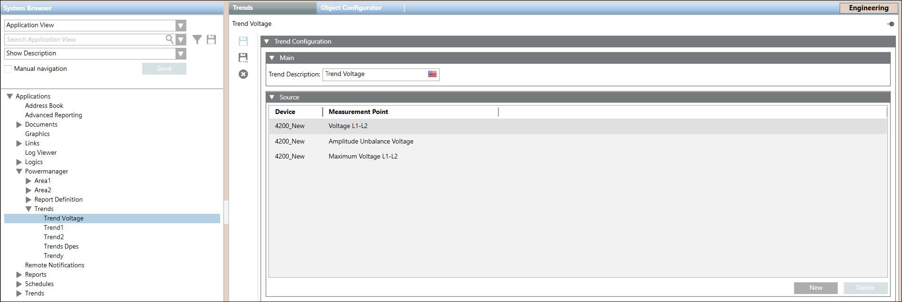

Powermanager Trends Workspace
Powermanager Trends allows you to work with trends that are recurring samples of data. These data samples can be taken at regular time intervals or whenever there is a change in a value of an object by a prescribed amount. Some examples of data samples in trending include the following:
- Voltage values recorded from various devices can be plotted and compared for a defined time period.
- Live values of the measurement points can be monitored for various devices.
You can configure trends at the system level or for a specific device. In Engineering mode, you can configure trends at the system level in the Trends node.
Source Expander
- Device: Allows you to select the device for which the trend has to be displayed.
- Measurement Point: Allows you to select the measurement point for which the trend has to be displayed.


NOTE:
You can add only ten data points to a specific trend.
You can add a device either by using the new button or via drag-and-drop from the system tree.